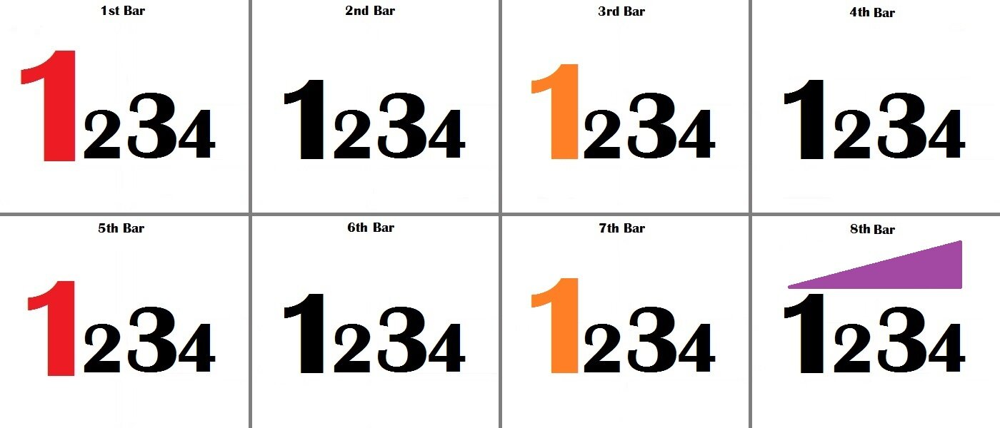

Musicality and Phrasing
14 March 2016
A special thanks to Laura Barnard for proposing this idea on .
Dancing is really just moving your body to music, and therefore musicality is the single most important aspect of dancing. Yes it is more important than technique, yes it is more important than hip movement in Latin, and yes it is more important than posture and frame in Standard. Many judges will put an off-time couple in last place, regardless of their skill as dancers, but musicality is more than just being on time. Musicality is making your dancing fit the music beyond just the time and tempo. It is showing that you match your dancing to the exact piece of music that is being played. But how can you match your dancing to the exact piece of music being played, if you've never heard it before and don't know what is coming next? Well, just like you know the time and tempo of the music, so should you know the art of phrasing, which will help you embody any piece of music you may dance to.
Phrasing
Individual beats group together to make a bar (aka a measure). For example, Cha Cha, Rumba, Jive, Foxtrot, and Quickstep all have four beats per bar. These bars group together to make phrases. Typically, there are eight bars per phrase. These phrases, then, group together to make a full piece of music. Beginner dancers learn to pay attention to when the beats come, but more advanced dancers need to learn to pay attention to when the bars and phrases come, because not all bars of music are the same. Making your dancing fit not only the beats, but also the differences among the bars of music is called phrasing.
How Music Phrases
Below you will see an image depicting an entire phrase of music. This could be any song in 4/4 time. It would be the same in 2/4 time (just make it 1 & 2 & instead 1 2 3 4), or even in 3/4 time (just drop all the 4's). Examine this phrase, and notice what stands out.
| • | The first beat of the first bar is the biggest, and is coloured red. This, the first beat of the phrase, is the strongest beat in the phrase. |
| • | The second strongest beat in the phrase is the first beat of the fifth bar, also coloured red. |
| • | The first beats of the third and seventh bars, coloured orange, are also very strong beats, but not as strong as the ones marked in red. This is because the odd numbered bars are stronger than the even numbered bars. |
| • | In each bar, the first beat is shown in the largest font. This is because it is the strongest beat in the bar. |
| • | The third beat of the bar is slightly larger than the second and fourth, but slightly smaller than the first. This is because it is the second strongest beat in each bar. |
| • | On the final bar in the phrase, there is a purple triangle, representing a lead in to the beginning of the next phrase. This lead in often contributes to the importance of the first beat of the following phrase. |
Listen to this song below, and follow the phrasing chart as you listen. You will hear all the points listed above (N.B. This song commences with the lead in to the first beat of the first bar of the phrase). The first entire phrase of this song commences at 0:03 and finishes at 0:18.
In just the first 18 seconds, you should have heard all the points listed above. There was a lead in to the first beat of the phrase, and into the first beat of the second phrase which was about to begin. The first beat of this phrase was extremely strong, and so were the first beats of the third, fifth, and seventh phrases. Finally, in every bar, the first beat was stronger than the rest, and the third beat was stronger than the second and fourth. If you were able to follow all that, it's time to put phrasing into your dancing.
How to Phrase your Dancing
Knowing that certain beats are stronger may seem unimportant at first, but it can have a huge impact on your dancing. For example, choreography that is built in a way that pays respect to the phrasing will make your dancing look stronger without you having to do anything else. To make your routines phrase, consider putting on stronger beats figures with a stronger impact, such as the first step of the Corta Jaca in Samba, the Mooch in Jive, the Natural Turn in Waltz, or the last Slow of the Drop Oversway in Tango. Adhering to this little trick will make those figures look more powerful, even if you don't dance them any differently. Furthermore, each phrase should represent a section of your dancing as you progress through your routine. For example, one phrase could last an entire long side, or half a phrase could be entirely figures danced toward the audience. In Viennese Waltz, most higher level dancers dance a full phrase of Natural Turns, ended with a Closed Change, then a full phrase of Reverse Turns, ended with a Closed Change. The same goes for Fleckerls. Dividing your routine like this just makes it seem as if it fits the music better.
Take a look at Slavik and Anna dancing this Samba, and see if you can spot any principles of phrasing in their routine.
You should have noticed two main things: firstly, the strong parts of the music coincide with strong parts of their routine, and secondly that their routine changes flavour slightly with each new phrasing beginning a new section, that is provided you aren't too distracted by their incredible dancing to just forget about this article all together!
Back to Musicality
The image of the full phrase of music above should help you with not only your phrasing, but your musicality. Whereas correct phrasing will allow you to dance powerfully within the phrase, good musicality will help you dance well within the bars. Remember that 1 and 3 are the most powerful beats of music in each bar, and so they need to be emphasized. Foxtrot, for example, the 1 is typically the driving and powerful step, while the 3 has a feeling of hanging in the air. Check out this beautiful Foxtrot by Arunas and Katusha to see what I mean.
But it isn't just Foxtrot! In Samba, if you do two Whisks, the one that occurs on the odd numbered bar should always be more powerful than the one done one the even numbered bar, which should be done slightly more softly. There are a million ways to make simple choreography more musical, but the point is that in every dance, attention to the established patterns of music will make your dancing stronger when it needs to be strong, softer when it needs to be soft, and more enjoyable to watch, judge, and dance throughout! Give it a try.